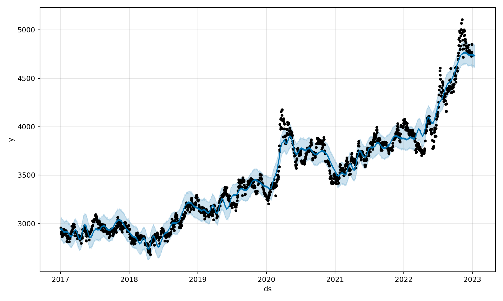

Capitulo 9 Facebook Prophet
Paso 0: Preparar los datos para que los reciba Prophet, la fecha debe ser nombrada ds y nuestra variable objetivo y o precio de cierre. Sin diferenciar
import pandas as pd
from prophet import Prophet
from prophet.diagnostics import cross_validation
from prophet.diagnostics import performance_metrics
df = data.reset_index().rename(columns={'Date': 'ds', 'Close': 'y'})[["ds", "y"]]
df['ds'] = pd.to_datetime(df['ds'])
df.head()## ds y
## 0 2017-01-02 2957.100098
## 1 2017-01-03 2950.699951
## 2 2017-01-04 2916.199951
## 3 2017-01-05 2891.100098
## 4 2017-01-06 2897.899902Paso 1: Creamos el modelo Prophet. No especificaremos los puntos de cambios, que el mismo algortimo los determine. Hemos visto que nuestro modelo es aditivo. No tenemos estacionalidad diaria, ni semanal evidente por lo tanto no colocaremos los parametros como True.
model = Prophet(seasonality_mode="additive")
model.fit(df)## <prophet.forecaster.Prophet object at 0x000002733F8FA370>
##
## 19:48:53 - cmdstanpy - INFO - Chain [1] start processing
## 19:48:54 - cmdstanpy - INFO - Chain [1] done processingPaso 2: Creamos los 15 siguientes dias que hemos estado pronosticando
future = model.make_future_dataframe(periods=15)
future## ds
## 0 2017-01-02
## 1 2017-01-03
## 2 2017-01-04
## 3 2017-01-05
## 4 2017-01-06
## ... ...
## 1574 2023-01-10
## 1575 2023-01-11
## 1576 2023-01-12
## 1577 2023-01-13
## 1578 2023-01-14
##
## [1579 rows x 1 columns]Paso 3: Pronosticamos y graficamos
forecast = model.predict(future)
fig = model.plot(forecast)
fig La mayoría de predicciones(linea) adoptan la forma de los datos reales(puntos) o se acojen al intervalo de confianza. Revisemos en un ultimo paso el RMSE usando validación cruzada, donde se hará una división del conjunto de datos de 180 y se evaluaran 90.
Paso 4: Realizamos validación cruzada y calculamos metricas
df_cv = cross_validation(model, horizon="90 days", period = "180 days")##
0%| | 0/10 [00:00<?, ?it/s]19:49:00 - cmdstanpy - INFO - Chain [1] start processing
## 19:49:00 - cmdstanpy - INFO - Chain [1] done processing
##
10%|# | 1/10 [00:00<00:04, 1.87it/s]19:49:01 - cmdstanpy - INFO - Chain [1] start processing
## 19:49:01 - cmdstanpy - INFO - Chain [1] done processing
##
20%|## | 2/10 [00:01<00:04, 1.77it/s]19:49:01 - cmdstanpy - INFO - Chain [1] start processing
## 19:49:02 - cmdstanpy - INFO - Chain [1] done processing
##
30%|### | 3/10 [00:02<00:05, 1.38it/s]19:49:02 - cmdstanpy - INFO - Chain [1] start processing
## 19:49:03 - cmdstanpy - INFO - Chain [1] done processing
##
40%|#### | 4/10 [00:02<00:04, 1.28it/s]19:49:03 - cmdstanpy - INFO - Chain [1] start processing
## 19:49:04 - cmdstanpy - INFO - Chain [1] done processing
##
50%|##### | 5/10 [00:04<00:04, 1.04it/s]19:49:04 - cmdstanpy - INFO - Chain [1] start processing
## 19:49:05 - cmdstanpy - INFO - Chain [1] done processing
##
60%|###### | 6/10 [00:05<00:04, 1.07s/it]19:49:06 - cmdstanpy - INFO - Chain [1] start processing
## 19:49:06 - cmdstanpy - INFO - Chain [1] done processing
##
70%|####### | 7/10 [00:06<00:03, 1.12s/it]19:49:07 - cmdstanpy - INFO - Chain [1] start processing
## 19:49:07 - cmdstanpy - INFO - Chain [1] done processing
##
80%|######## | 8/10 [00:07<00:02, 1.05s/it]19:49:08 - cmdstanpy - INFO - Chain [1] start processing
## 19:49:09 - cmdstanpy - INFO - Chain [1] done processing
##
90%|######### | 9/10 [00:09<00:01, 1.28s/it]19:49:10 - cmdstanpy - INFO - Chain [1] start processing
## 19:49:11 - cmdstanpy - INFO - Chain [1] done processing
##
100%|##########| 10/10 [00:11<00:00, 1.40s/it]
100%|##########| 10/10 [00:11<00:00, 1.10s/it]df_p = performance_metrics(df_cv, rolling_window=1)
rmses = [] # Store the RMSEs for each params here
rmses.append(df_p['rmse'].values[0])
rmses## [285.46326653247286]Este sería el error cuadratrico medio